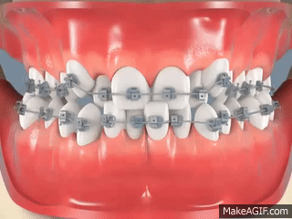

Hasta hace unos años la palabra bracket sonaba muy extraña; pero ahora es de lo más
habitual y ya la hemos incluido en nuestro día a día. Los brackets son utilizados para
corregir malos posicionamientos dentales y alinear correctamente los dientes.

Estos brackets metálicos se componen de los siguientes elementos:
Ligaduras: Son las piezas que ligan los brackets al arco y son las responsables de forzar y aplicar el movimiento de los dientes.
Arco: Eje de unión para presionar las piezas dentales.
Bracket: Es el punto responsable de marcar la dirección que queremos darle a los dientes.
Nuestros tratamientos están diseñados para cubrir las necesidades específicas de cada paciente.